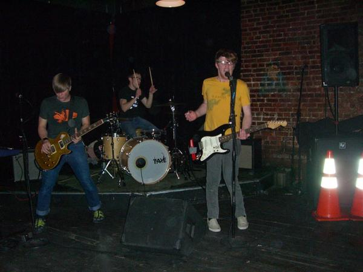
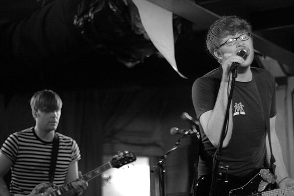
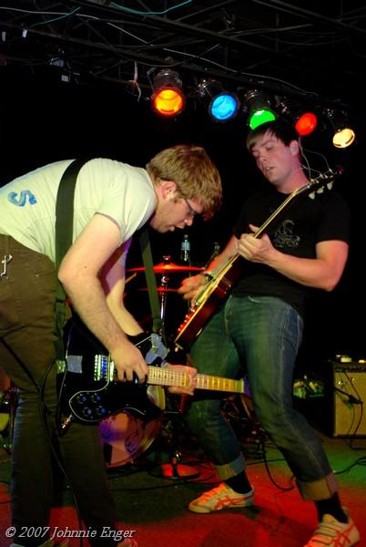
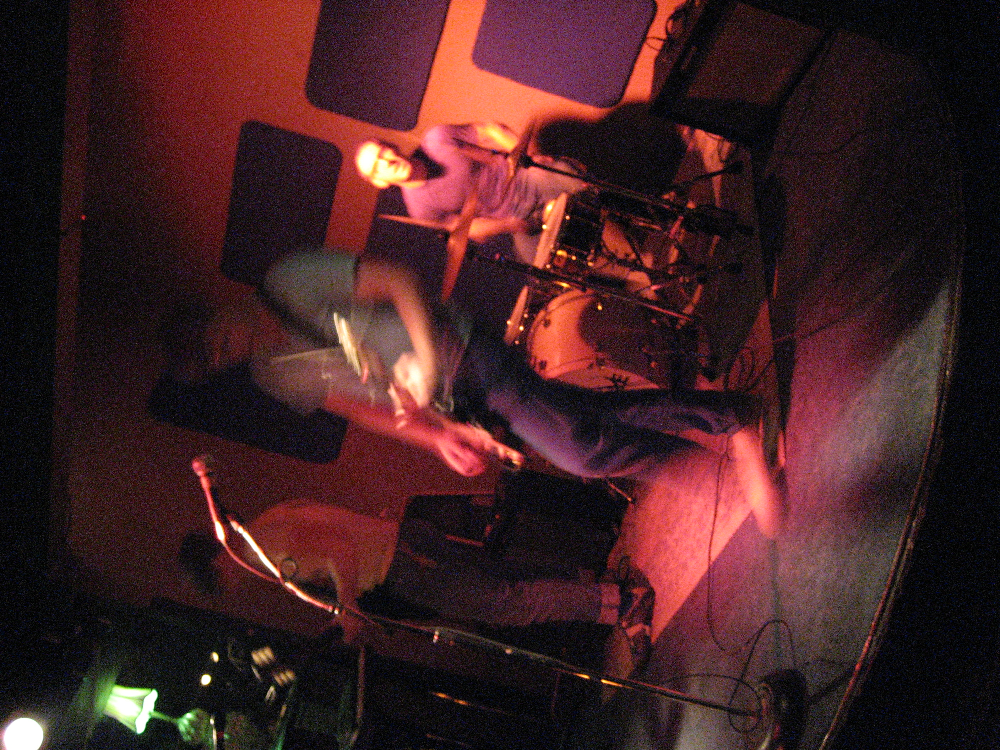
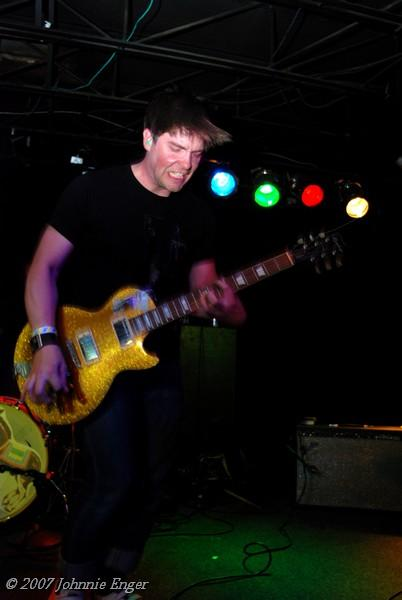
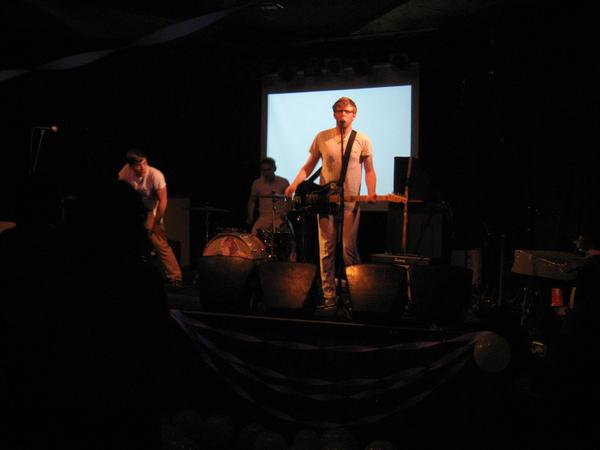
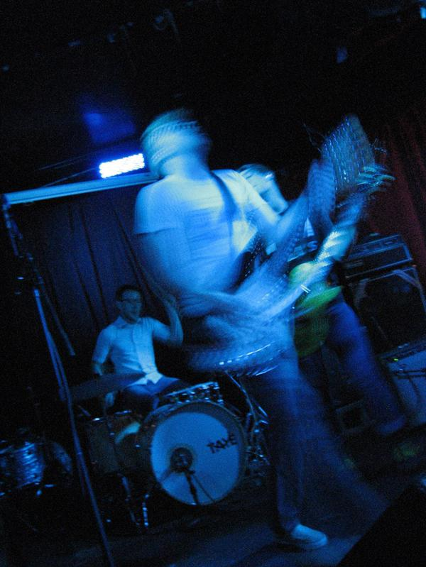
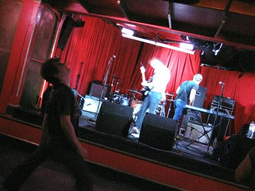
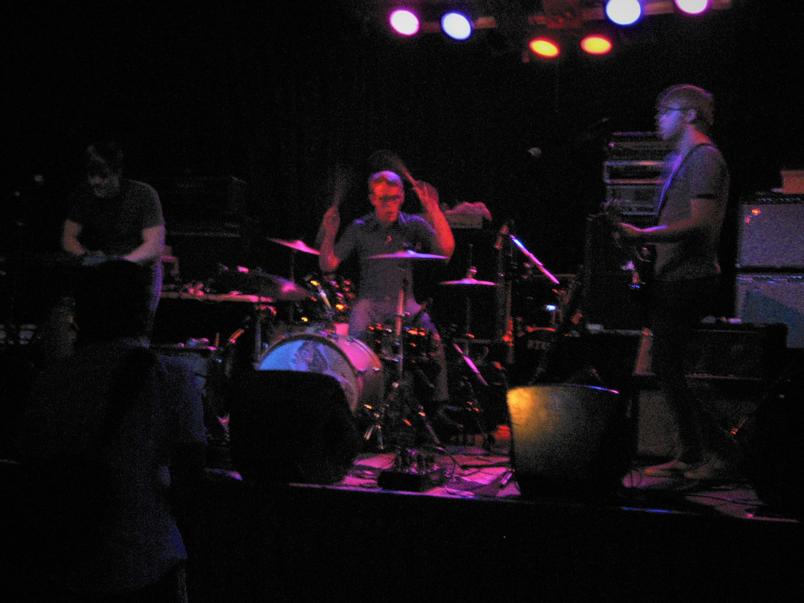

2006-2008
Teeth and Hair was a spastic and experimental noise trio that emerged from the vibrant Seattle art rock scene in the mid-2000s. With their stripped-down sound and raw energy, they delivered a sonic assault that was equal parts captivating and disorienting. The band's debut album, "Beards and Visions," showcased their idiosyncratic approach to songwriting, featuring intricate guitar work, haunting keyboard melodies, and frenzied drumming. Teeth and Hair's live shows were a spectacle to behold, with the band members fully immersing themselves in the performance and leaving audiences transfixed. Despite their relatively short lifespan, Teeth and Hair left a lasting impact on the Pacific Northwest music scene, inspiring countless artists to explore the outer limits of art rock. Teeth and Hair played numerous shows around the Pacific Northwest, most notably opening for Lightning Bolt, Battles, Thunderbirds Are Now!, VCR, So Many Dynamos, Kimya Dawson, Mirah, and The Plastic Constellations.
Although Teeth and Hair may have been ahead of their time in terms of their experimental art rock sound, unfortunately, their pictures weren't able to keep up. This is because the band was active during an era before smartphones and high-quality digital cameras were widely available, leading to less than optimal image quality. Adding insult to injury, Teeth and Hair's social media presence was largely based on Myspace (where their music had received over 11,000 listens), which has since taken their servers down, leaving many of the band's online records lost to time. Despite these challenges, Teeth and Hair's music and live performances remain a testament to their raw creativity and innovative sound.
In an effort to preserve their legacy and ensure their music doesn't fall into obscurity, Teeth and Hair have created teethandhairtheband.com as an archive to the band's music and performances. This website serves as a testament to the band's influence and innovation, providing a space for fans to revisit their music and learn more about their story. The creation of the website was also a response to Wikipedia's repeated rejection of an article on Teeth and Hair, despite the submission of multiple credible sources. Regardless, Teeth and Hair's music continues to inspire and captivate fans of experimental art rock.
Publised Articles: "Underage" by Megan Seling in The Stranger (November 23, 2006): A brief mention of Teeth and Hair in a roundup of upcoming shows in Seattle. The Stranger "Party Hard Decisions" by Eric Grandy in The Stranger (April 5, 2007): A review of a Teeth and Hair show at the Sunset Tavern in Seattle. The Stranger "Up & Coming" by Stranger Staff in The Stranger (August 5, 2006): A preview of an upcoming Teeth and Hair show at the Funhouse in Seattle. The Stranger "Mirah/Kimya Dawson/Teeth and Hair/Terrordactyls The Vera Project (Downtown YMCA Location)" by Rob Bergquist in West Coast Performer (December 8, 2006): A review of a concert featuring Teeth and Hair, Mirah, Kimya Dawson, and Terrordactyls. West Coast Performer "Archives West: Jim Anderson collection: Crocodile Cafe live recordings, 2002-2007": An archival collection of live recordings from the Crocodile Cafe in Seattle, including recordings of Teeth and Hair. Archives West "Crocodile Café Collection: Home" by the University of Washington: An archival collection of materials related to the Crocodile Cafe in Seattle, including flyers, posters, photographs, and recordings of live shows, including Teeth and Hair. uw.edu








